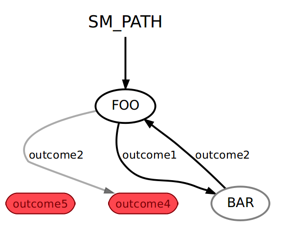

Title: Readme Date: 2020-05-20 16:50 Modified: 2020-05-20 20:50 Category: learn Tags: smatch Authors: Qlong Summary:ros smatch学习笔记
2. ROS+smatch¶
2.1. 创建一个状态机¶
2.1.1. 创建状态¶
- 从State基类继承，并有两个方案。
class Foo(smach.State):
def __init__(self, outcomes=['outcome1', 'outcome2']):
# Your state initialization goes here
def execute(self, userdata):
# Your state execution goes here
if xxxx:
return 'outcome1'
else:
return 'outcome2'
- 在init方法中，可以初始化状态类。 确保切勿阻塞init方法！ 如果需要等待系统的其他部分启动，请从单独的线程执行此操作。 用户的初始化代码写在这里
- 在execute方法中，可以执行所需的任何代码。 只要您愿意，可以使用此方法进行阻止。 从此方法返回后，当前状态即告完成。 用户的执行代码写在这里。
- 状态结束时，它返回结果。 每个状态都有许多与之相关的可能结果。 结果是描述状态如何完成的用户定义的字符串。 例如，一组可能的结果可能是（“成功”，“失败”，“真棒”）。 将根据前一个状态的结果指定到下一个状态的转换。 用户可以return字符串结果。
2.1.2. 把状态加入到状态机¶
- 状态机是包含多个状态的容器。 将状态添加到状态机容器时，可以指定状态之间的转换。
sm = smach.StateMachine(outcomes=['outcome4','outcome5'])
with sm:
smach.StateMachine.add('FOO', Foo(),
transitions={'outcome1':'BAR',
'outcome2':'outcome4'})
smach.StateMachine.add('BAR', Bar(),
transitions={'outcome2':'FOO'})
初始化状态机的时候，也会定义状态机的输出。 用add方法把状态加入，同时用transitions参数设定结果与状态变化的对应关系。
